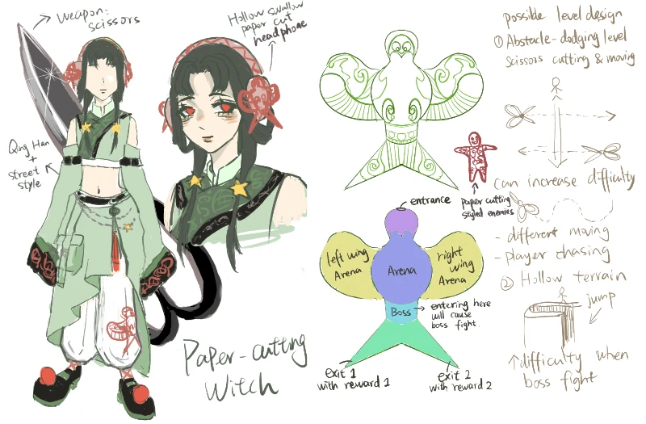
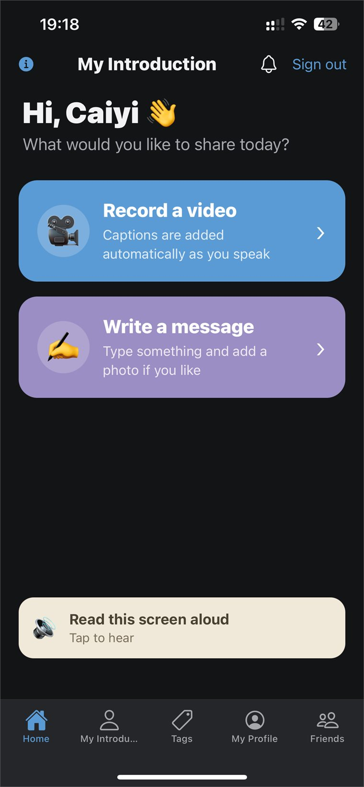
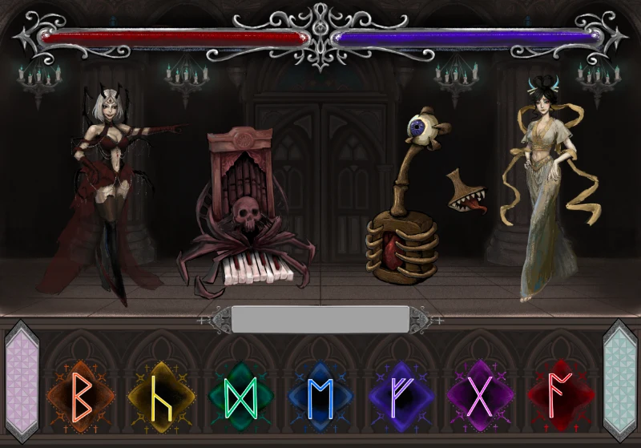
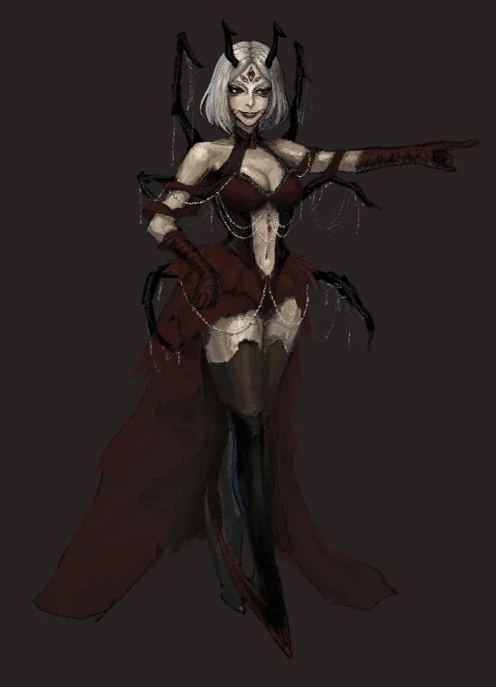

01Concept & map design · Deeplight Games
Game Design
Mechanics, systems, narrative and the process of building interactive worlds.
DESIGN / RESEARCH / ART
Game Designer &
Player Experience Researcher
I bring psychology, game design and visual art together to create interactive experiences.
THE COLLECTION
Explore my design work, research, visual art and contributions to gaming communities.

01Concept & map design · Deeplight Games
Mechanics, systems, narrative and the process of building interactive worlds.


QLab · Neural Entrainment & BeforeHello
Psychology, HCI and experimental approaches to how people play, learn and interact.


Game art & character design · Dueling Duet
Characters, environments and visual systems, from original illustrations to three-dimensional assets.
Creator partnerships & community work
Game communities, localization, digital media and the exchange of design knowledge.
BACKGROUND
My background in psychology informs the way I approach game systems, interaction design and player experience research.